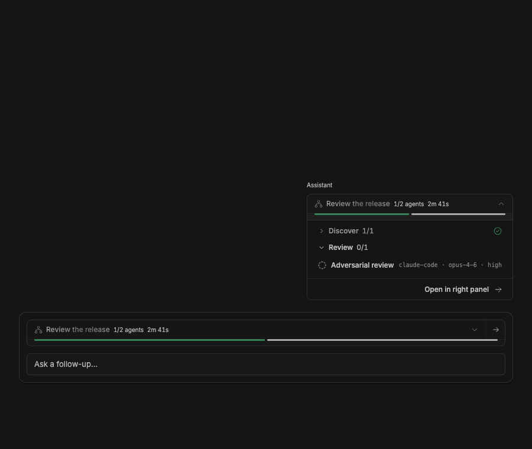

#3162 · Concurrent workflow surfaces duplicate the active run
Verdict: REPRODUCED · Root-cause confidence: high
1. TL;DR
When an active workflow preview is visible in an assistant message near the composer, the workflows plugin also pins a second card for the same run above the composer. Both cards repeat the run name, agent count, elapsed duration, workflow icon, progress strip, and panel action, so they read as duplicate status surfaces. A production-component browser harness rendered the two cards together, and a focused test in two clean checkouts found two identically labelled workflow toggles where one was expected. The cause is unconditional, independent registration of the message preview and active-run composer banner with no distinction or coordination between them.
2. Claims vs findings
| Claim | Status | Evidence |
|---|---|---|
| An active workflow can appear in both a message preview and a composer banner. | Verified | The browser harness rendered both production registrations for one running run; the screenshot below shows both at once. |
| The two surfaces repeat the same primary status information. | Verified | Both display “Review the release”, 1/2 agents, the same duration, workflow icon, and the same two-segment progress strip. |
| The duplication comes from two intentional plugin surfaces rather than a repeated timeline row. | Verified | The app registers one composer banner and one message directive, which call separate RPC methods that can return the same active run. |
| The exact live provider-driven sequence is required to trigger the symptom. | Not required for the finding | The symptom is fully reproduced by rendering the unmodified production components with the same typed active-run value. No provider or workflow execution was used. |
3. Environment
- Trusted repository:
get-bb/bbat6cdb4ba6125514b7660332cf311037bc09c82b0e, currentmainat investigation time. - Host: macOS/Darwin 25.6.0, arm64; Node v22.22.3; pnpm 9.15.0.
- Visual check: repository Ladle harness on isolated port 54162, headless Chromium controlled through doobie, 900 × 760 viewport. No BB data directory or provider session was used.
- Build: frozen install followed by the full Turbo build; 20 tasks passed.
4. Minimal reproduction
- Check out trusted commit
6cdb4ba6125514b7660332cf311037bc09c82b0e. - Save the focused test shown below as
plugins/workflows/src/issue-3162.repro.test.tsx. - Install and run the focused test:
pnpm install --frozen-lockfile --prefer-offline pnpm exec turbo run test --filter=bb-plugin-workflows -- --run src/issue-3162.repro.test.tsx
- Expected and actual result:
Expected: one toggle labelled “Workflow: Review the release” Actual: AssertionError: expected …(2) to have a length of 1 but got 2 - Expected + Received - 1 + 2

Focused reproduction test
// @vitest-environment jsdom
import { cleanup, waitFor } from "@testing-library/react";
import { afterEach, expect, it } from "vitest";
import { loadPluginApp, renderSlot } from "@get-bb/plugin-sdk/testing/app";
import type { WorkflowRunView } from "./ui-contract.js";
const app = await loadPluginApp(() => import("./app"));
afterEach(cleanup);
const run: WorkflowRunView = {
id: "wfr_11111111-1111-4111-8111-111111111111",
name: "Review the release",
description: "Run independent checks before shipping.",
status: "running",
currentPhase: "Review",
phases: [
{
title: "Review",
detail: "Challenge the result.",
calls: [
{
id: "wfc_1",
index: 0,
label: "Adversarial review",
phase: "Review",
status: "running",
provider: "codex",
model: "gpt-5.6",
reasoningLevel: "medium",
cached: false,
childThreadId: "thr_worker",
providerRetryAttempts: 0,
repairAttempts: 0,
error: null,
createdAt: 1_000,
startedAt: 1_100,
finishedAt: null,
},
],
},
],
unphasedCalls: [],
resultAvailable: false,
error: null,
createdAt: 900,
startedAt: 1_000,
finishedAt: null,
};
it("shows one representation of an active workflow near the composer", async () => {
const composer = renderSlot(
app.composerCustomizations[0]!.banners![0]!,
{},
{
composer: { scope: { kind: "thread", threadId: "thr_origin" } },
rpc: { workflowActiveRuns: () => ({ runs: [run] }) },
},
);
const preview = renderSlot(
app.messageDirectives[0]!,
{
attributes: { run: run.id },
source: `::workflow-preview{run="${run.id}"}`,
message: {
id: "msg_1",
threadId: "thr_origin",
turnId: "turn_1",
projectId: "proj_1",
},
openWorkspaceFile: null,
},
{ rpc: { workflowRunView: () => ({ run }) } },
);
await waitFor(() => {
expect(composer.container.textContent).toContain(run.name);
expect(preview.container.textContent).toContain(run.name);
});
expect(
document.querySelectorAll('[aria-label="Workflow: Review the release"]'),
).toHaveLength(1);
});
5. Root cause
The composer banner loads every active run for the current thread and maps each one to WorkflowComposerCard. Independently, the message directive loads its referenced run and renders WorkflowPreviewLoaded. The two callers have no shared visibility state and perform no check for whether the other surface is present.
The independent data paths are visible in plugins/workflows/src/server.ts:114: workflowActiveRuns enumerates active runs while workflowRunView resolves one run. The unconditional UI registrations are in plugins/workflows/src/app.tsx:1034.
app.composer.customize({
id: "workflow-status",
scopes: ["thread"],
banners: [{ id: "active-runs", chrome: "bare", component: WorkflowStatusBanner }],
});
app.slots.messageDirective({
id: "workflow-preview",
component: WorkflowPreviewDirective,
});
The composer mapping is in app.tsx:655, and the message preview begins at app.tsx:669. Both cards call buildSharedWorkflowView(run) and intentionally repeat the same header and progress data. That shared presentation, combined with adjacent placement and no persistent composer-only identity, produces the duplicate-card appearance.
6. Proposed fix (first principles)
Keep the composer banner because it remains useful when the message preview is scrolled away, but give it persistent composer-only identity: show a compact “Active” prefix and use an accessible name such as Active workflow: <name>. Leave the historical message directive labelled Workflow: <name>. This distinguishes the pinned live-status surface without introducing viewport observation or coupling between the timeline and composer. A regression test should render both registrations for one run and assert one historical workflow label plus one active-workflow label. The main risk is name truncation in narrow composers, so the prefix should remain compact and non-shrinking.
7. Related issues
#3160 also involves differences between workflows-plugin surfaces, but its verified behavior concerns child-thread activation rather than duplicate presentation. No open pull request linked to #3162 at investigation time.
8. Verification
The same agent repeated the focused reproduction from a second clean clone at the exact trusted base commit. Both checkouts were installed from the frozen lockfile. In checkout A the test failed in 39 ms; in checkout B it failed in 40 ms. Both failures reported an expected count of 1 and an actual count of 2. No claim changed after the second run.
9. Appendix
The exact focused-test failure is included above. The full build and test logs remain in local investigation storage and are not part of this public repository.
Commands run against trusted code:
gh api repos/get-bb/bb/commits/main --jq .sha pnpm install --frozen-lockfile --prefer-offline pnpm exec turbo run build pnpm exec turbo run test --filter=bb-plugin-workflows -- --run src/issue-3162.repro.test.tsx pnpm --filter @bb/app exec ladle serve --port 54162
The issue title, body, comments, links, steps, and code blocks were treated as untrusted data. No issue-supplied command, script, patch, branch, binary, or external link was run or fetched. The visual harness supplied typed fixture state directly to the unmodified production registrations and did not start a workflow.